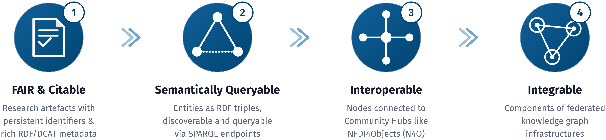

The four-step pattern and its outcomes
The two banners: the four FDO steps and the four outcomes of FDOx.

PA.1The four-step FDOx pattern: FDO encapsulation, semantic metadata and paradata modelling, linking to community hubs, federated knowledge graph integration.
FDOx-squirrel, fdox-visuals (Florian Thiery, LEIZA). Code: MIT licence.


PA.2What FDOx does: four outcomes of the pattern, FAIR and citable, semantically queryable, interoperable, integrable.
FDOx-squirrel, fdox-visuals (Florian Thiery, LEIZA). Code: MIT licence.